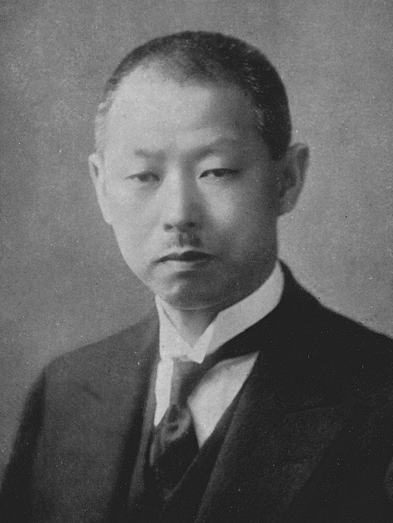
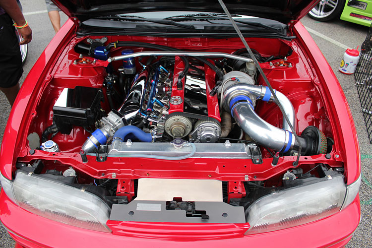

története
A Nissan pályafutása az 1930-as évek elején kezdődött el, amikor Japánban megalakult a Jidosha-Seido Ltd, amely Datsun néven kezdett el autókat készíteni. 1934-ben a Nikon Sangyo Co. kizárólagos tulajdont szerzett a cégben, ekkor a cég neve Nissan Motor Co lett, rá egy év múlva, 1935-ben Jokohamában beindult az autógyártás. Ekkor már a személyautók mellett haszongépjárműveket, autóbuszokat is készítettek, de továbbra is Datsun néven. A második világháború alatt a katonai igények kielégítésére a termelés felfutott. Elérte az évi 20 ezer darabot. A háború után 1947-ben indult újra a gyártás, még mindig Datsun néven. A háború tapasztalata segítette a céget, hogy 1951-ben megalkossa az azóta is világhírű modelljét, a Patrolt. 1959-ben lépett színre a Datsun Bluebird, amely azonnal nemzetközi sikert hozott. Rá pár évre már a Amerikában is megnyitották a képviseletet. Ezzel párhuzamosan megindul az európai értékesítés is, amely után a cég kezdi magát bebetonozni Európába. Fuzionált a Prince Motor Company-val, és már közösen ismét olyan sikeres modelleket hoztak létre, mint a Skyline és a Gloria. 1969-ben megépítik a Z240-es modellt, majd pár évre rá a sikeres Sunny-t, amely a nagy olajválság idején az alacsony fogyasztásával aratott sikert. 1980-ban a barcelonai Motor Iberica S.A.-ban jut részesedéshez, majd Tennessee-ben létrejön a Nissan Motor Manufacturing Corporation USA. 1983-ban az Iberica S.A.-nál megindul a Patrol gyártása, majd az export járműveket is Nissan néven kezdik el értékesíteni. 1984-ben az angliai Sunderland-ben megalakul a Nissan Manufactoring UK. Ltd. melynek futószalagjáról két év múlva legördül az első Bluebirds. Két év múlva megalakul a Nissan Európai Technikai Központ is. Európában hatalmas fejlődés következett be az 1990-es években. Megkezdődik a Micra, az Almera és a Primera gyártása és exportja a világ minden tájára. Még Japánba is exportálnak autókat. 1999-ben a cég szövetséget kötött a francia Renault-val, ezzel létrejött a világ 4. legnagyobb autóipari csoportja. A veszteséges Nissan nyereségessé vált és képes lett több új modellt bevezetni a piacra

a GT-R története
1969 és 1974 között, majd 1989 és 2002 között, a Nissan gyártott a Skyline kupénak egy nagy teljesítményű változatát, Nissan Skyline GT-R néven. Ez az autó a Nissan egy ikonikus szériája volt és több eredményt is elért mind az utakon, mind a pályákon. A GT-R egy teljesen új modell, némelyik része meglehetősen hasonlít elődjéhez, a Skyline GT-R-hez, például a kör alakú hátsó lámpája. Mint néhány későbbi generációja a Skyline-nak, így az új GT-R is összkerékhajtású, és egy ikerturbós 6 hengeres motor hajtja. De a négykerék kormányzás HICAS rendszerét kivették belőle, a korábbi sorhat RB26DETT motor helyett pedig egy új VR38DETT V6 motor került bele. A GT-R hagyatéka miatt, az alvázszám az összes új GT-R-nél CBA-R35 vagy csak simán R35 lett, az előző Skyline GT-R-ek elnevezési trendjét tovább cipelve. A GT-R megőrizte a becenevét is az ősének, a Godzillát, amit eredetileg egy ausztrál autós kiadó nevezett el az 1989, júliusi kiadásukban.

miért is lett ennyire híres?
Minden z RB26DETT motorból idult ami egy 2,6 literes (2568 köbcentiméteres) ikerturbós soros hatos motor, amelyet a Nissan gyárt, az 1989-2002-es Nissan Skyline GT-R-hez. Az RB26DETT motorblokk öntöttvasból, míg a hengerfej alumíniumötvözetből készül, amely hengerenként 4 DOHC szelepet tartalmaz (összesen 24 szelep). Az RB26DETT szívóereje eltér a többi RB sorozatú motortól, mivel egyetlen fojtószelepház helyett hat különálló (3 készlet 2 fojtószelep-szerelvényből áll, amelyek sziámmal vannak összefűzve). A motor párhuzamos ikerturbós rendszert is használ, egy pár T25 típusú kerámia turbófeltöltőt használva, amelyek a szelepek mellett vannak beállítva, hogy a töltőnyomást 10 psi-re (0,69 bar) korlátozzák, bár a Skyline GT-R beépített nyomásfokozó-korlátozóval rendelkezik. emelés 14 psi (0,97 bar) alatt. Az első 2,6 literes RB26DETT-t a Nissan körülbelül 276 LE-re (280 LE; 206 kW) 6800/perc fordulatszámon és 353 N⋅m-en értékelte; 260 lbf⋅ft (36 kg⋅m) 4400 ford./percnél. A gyártás végére a teljesítményszint körülbelül 320 LE-re (235 kW; 316 LE) nőtt 6800-as fordulatszámon és 392 N⋅m-en; 289 lbf⋅ft (40 kg⋅m) 4400 ford./percnél, nem csak a motor fejlesztései és módosításai miatt, hanem az autógyártók között akkoriban kötött „úri megállapodás” miatt is, amely korlátozta bármely jármű „reklámozott” lóerejét. 280 LE-ig (276 LE; 206 kW). Míg a Nissan által közölt adatok a fentebb idézetteknek feleltek meg, a rajongók körében ismert volt, hogy az autó gyári teljesítménye közelebb állt a 320 LE (235 kW; 316 LE) értékhez. Az RB26 széles körben ismert, és igen népszerűvé vált erőssége és teljesítménye miatt vasblokkjának és kovácsolt belső részeinek köszönhetően, így módosításbarát platform a tunerek és általában az utángyártott módosítások számára.
